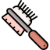
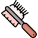

Recomendaciones
Te queremos brindar algunas recomendaciones en base a algunos expertos criadores y pensando en la salud y bienestar de un animal, las recomendaciones van enfocadas en si estás:
- Interesado en informarte antes de adquirir un cachorro.
- Si tienes un cachorro pero quieres consejos para cuidarlo de la mejor forma posible.
Empecemos primero hablando sobre consejos antes de adquirir un cachorro, lo escencial es que si quieres un cachorro de raza, investigues su origen y los cuidados específicos de esta, ya que tienen características distintas y cuidados necesarios para que su cuido sea óptimo
Al querer adquirir un cachorro siempre lo queremos bebé, pero algunas veces este deseo es una ignorancia que puede hacerle daño al cachorro más de lo que creerías, ya que es escencial separar al cachorro de la madre en una edad adecuada tanto para la salud del cachorro como para la de sus dueños, ya que una separación temprana puede generar en un cachorro conductas no deseadas que pueden generar disgusto en futuros propietarios. La edad adecuada de adquirir un cachorro es a los 2 meses, con vacunas y desparacitaciones incluídas en su compra, esto para garantizar su salud y que a esta edad, el cachorro tiene ya una correcta socialización gracias a su madre y hermanos, evitando así estrés por separación, casos que muy comúnmente se dan en cachorros que han sido adquiridos menores de esta edad, incluso llegando a hacer daños y morder cosas que no debería, etc.
Teniendo claro esto, no es mucho lo que sigue después, saber comprarlo en un buen lugar que esté asociada con grupos de la FCI oficiales, los perros no deben ser baratos ni económicos, son un lujo y un trabajo, así que si quieres adquirir uno ten en cuenta que debes gastar considerable dinero si quieres obtenerlo de un lugar responsable y con calidad.
Las cosas que necesita un cachorro son:
- Juguetes
- Cama
- Tazones de comida y agua
- Tiempo
- Cepillo para peinar
- Comida de Calidad
 



Tener en cuenta la comida que le brindas a tu cachorro, su tabla nutricional porque hay mucho concentrado que por lo barato, lo compramos pero no sabemos absolutamente nada sobre si en verdad es un buen alimento para nuestro peludo, la alimentación varía en peso, tamaño y etapa de vida del can, por lo tanto le recomendamos tener esto en cuenta y ser consciente que, un alimento de calidad no es económico.
Con los gatos, pasa de forma muy similar a todo lo anterior, pero sus cuidados y necesidades son distintas, ya que estos necesitan una:
- Caja de arena
- Juguetes específicos para gatos( rascar y afilar sus uñas, plumas o ratones)
- Lugares altos dónde puedan estar ( opcional, pero esto es por comodidad de ellos).

Debe tener en cuenta que a diferencia de los perros, los gatos son considerados una plaga por su reproducción tan rápida por lo tanto le recomendamos sino tiene planes de crianza, esterilizalo para no contribuir a más gatos callejeros y tener tu gatito en casa, ya que ellos pueden atentar con la vida de la fauna silvestre ( iguanas, pajaros etc).
A continuación, dejamos un video creado por Experto Animal, que nos explica de manera más puntual de lo que tratamos de transmitir en el texto si le es mucho más cómodo para su interpretación.